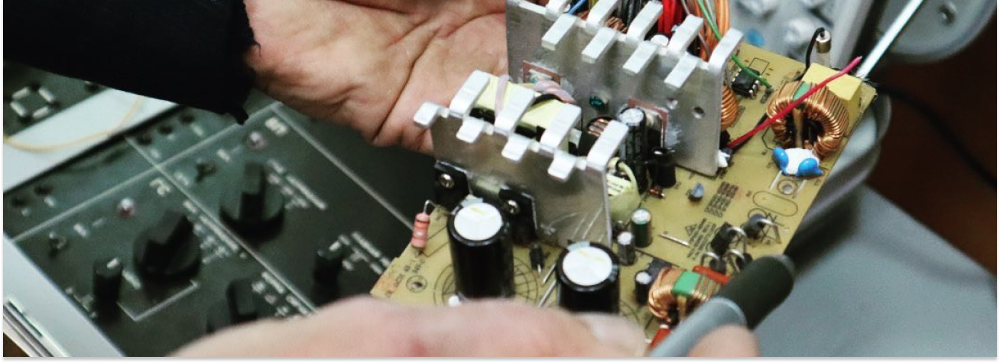
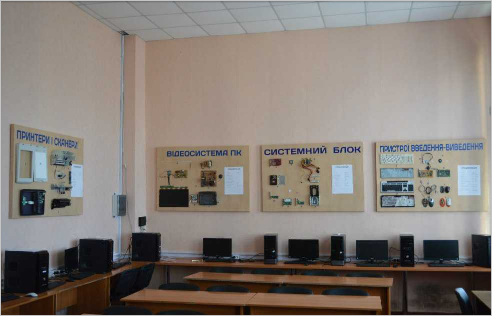

Спеціальність "Комп'ютерна інженерія" готує студентів для IT-сфери, а саме:
- розробників (програмістів);
- системних адміністраторів;
- спеціалістів з комп'ютерних мереж;
- спеціалістів з ремонту та обслуговування ПК.
Під час навчання студенти вивчають:
- мови програмування високого та низького рівня - Assembler, C, C#, PHP, JavaScript;
- організацію ЕОМ і систем, протоколи та інтерфейси персонального комп'ютера;
- архітектуру комп’ютерів, системне і прикладне програмне забезпечення, мікропроцесорні системи,
обчислювальні мережі, WEB-програмування.
Випускники можуть виконувати:
- роботи з комплектації, монтажу і налагодження комп'ютерних систем;
- ремонту і сервісного обслуговування ПК;
- створенню і налаштуванню комп’ютерних мереж;
- створенню сайтів; розробки програмного забезпечення і упровадження готових програм у виробництво;
- розробки та проектування мікропроцесорних та комп'ютерних пристроїв різноманітного призначення.
Фахова комісія спецдисциплін із спеціальності
«Обслуговування комп’ютерних систем і мереж»
Для навчання молодих фахівців з комп’ютерної техніки було відкрито дві
нові комп’ютерні лабораторії. Вони поступово обладнуються стендами,
вимірювальними приладами та діагностичним обладнанням. Тому
нескладний ремонт системних плат, блоків живлення, відеоадаптерів
студенти спеціальності здійснюють в лабораторіях циклової комісії.

При підготовці фахівців з цієї спеціальності вивчаються дисципліни,
що формують професійні знання і уміння:
- Комп'ютерна електроніка;
- Технічне обслуговування ПК;
- Архітектура комп’ютерів;
- Комп’ютерні мережі;
- Дискретна математика;
- Програмування мовою С++;
- Алгоритми та методи обчислень;
- Теорія ймовірностей та математична статистика;
- Програмне забезпечення;
- Схемотехніка;
- Електрорадіовимірювання;
- Операційні системи.
Професійні назви робіт, які може виконувати фахівець
освітньо-кваліфікаційного рівня "Молодший спеціаліст":
- Адміністратор та налагоджувальник локальних мереж;
- Технік-програміст;
- Інженер з обслуговування комп’ютерних мереж;
- Керівник підрозділу комп'ютерних послуг;
- Технічний фахівець в галузі електроніки та телекомунікацій;
- Оператор електронно-обчислювальної (комп'ютерної) техніки;
- Технік обчислювального (інформаційного) центру;
- Консультант з програмного забезпечення;
- Регулювальник радіоелектронної апаратури та приладів.